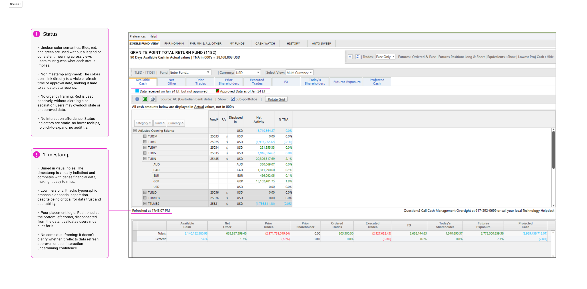
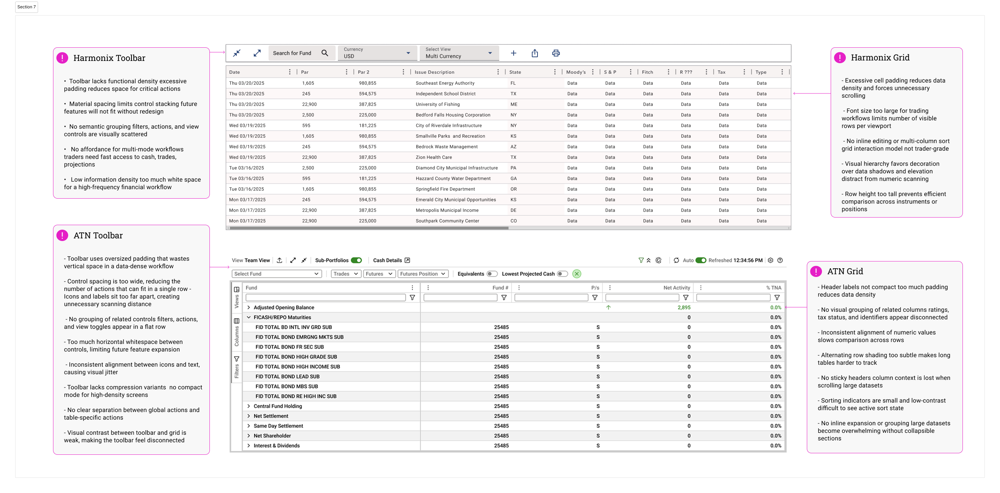
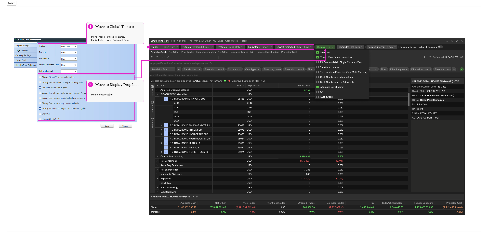
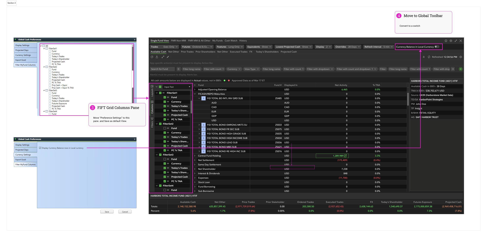
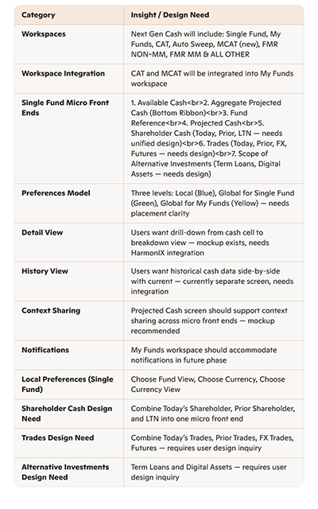
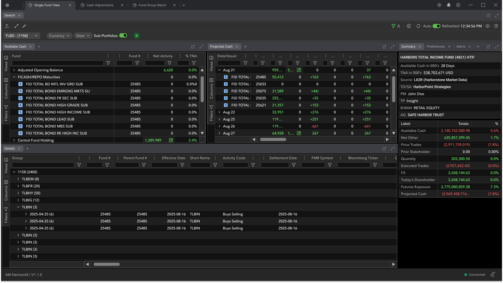
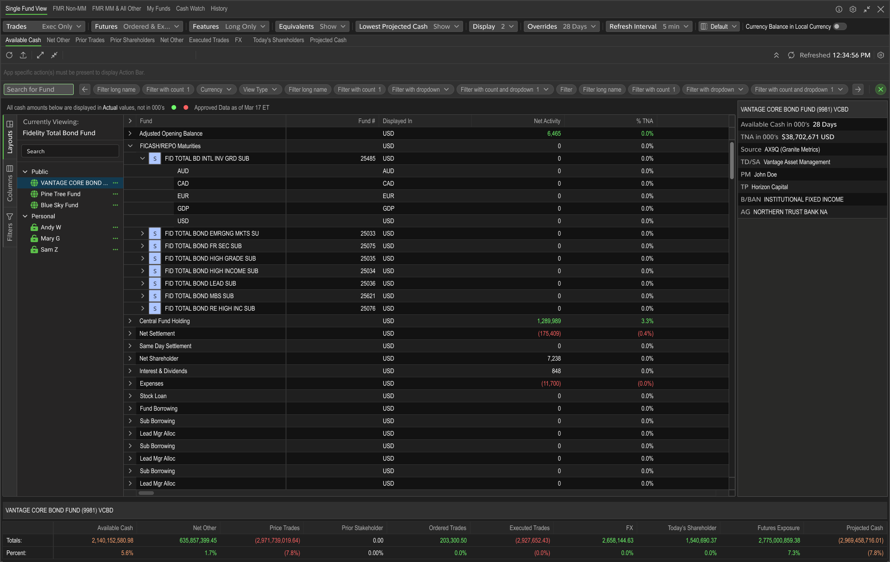
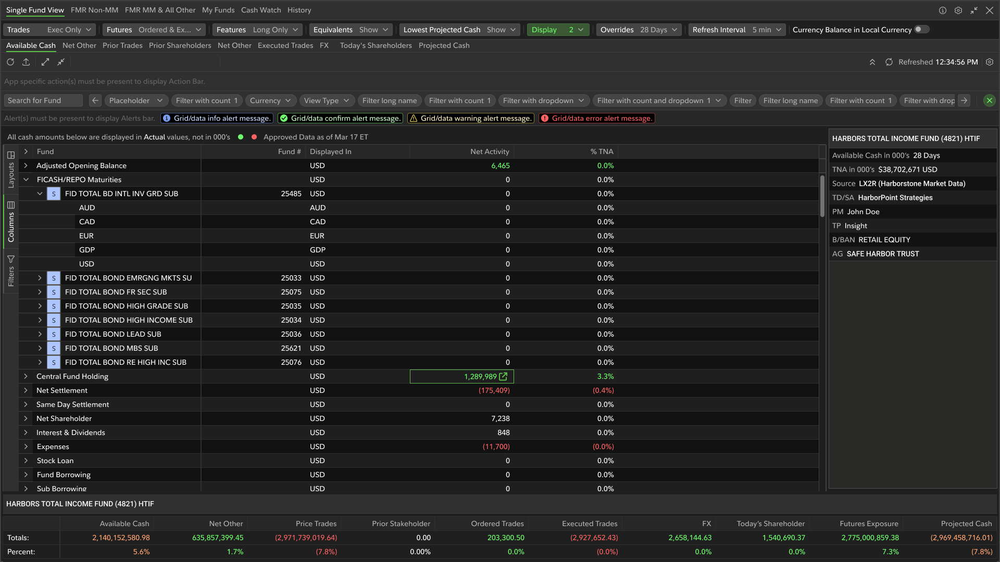
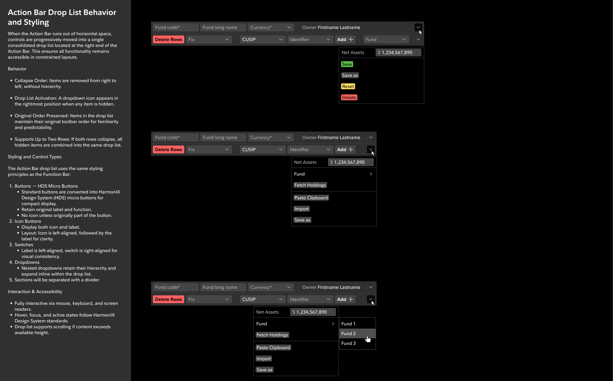

A dashboard built for passive summaries, not the intraday decisions traders actually needed to make.
Fidelity's Global Cash dashboard lacked real-time data clarity and the density required to support intraday liquidity decisions. Traders were working around the tool rather than through it — relying on manual validation, fragmented workflows, and inconsistent data presentation across Active Trader system components.
The existing system couldn't support trading-grade decision velocity. High-stakes data needed to be trusted instantly — not cross-referenced manually.
The platform's layout hierarchy didn't reflect how traders actually prioritized information. Timestamp trust, data freshness indicators, and multi-currency visibility were either absent or buried — adding friction at exactly the wrong moment.
Embedded Senior UX Designer within Fidelity's Center of Excellence, leading the full redesign of Global Cash.
Six phases from discovery to delivery — each one building the foundation for the next.
Partnered with traders, product, engineering, and the CoE to validate real workflows, improve data density, and establish governed patterns that support trading-grade clarity across Global Cash.
Built for high-volume tasks
Rate-based layouts, governed toolbar systems, and persistent navigation designed to support rapid context switching across multi-currency portfolios without losing state.
One spec, three teams
Implementation-ready UX specs adopted by product and engineering across the Fixed Income ecosystem — reducing back-and-forth and accelerating delivery velocity.
A platform traders could trust — and a model the organization could build on.
"The redesign elevated Global Cash from a data summary tool to a trading-grade liquidity workspace — recognized by CoE as the foundation for future Fixed Income modernization."
The work









Start the system evaluation phase earlier and map trader mental models explicitly before touching layouts. The biggest friction points weren't visual — they were workflow sequencing issues that only surfaced once we had prototypes in front of active traders. Earlier exposure to real decision scenarios would have sharpened the information hierarchy faster.